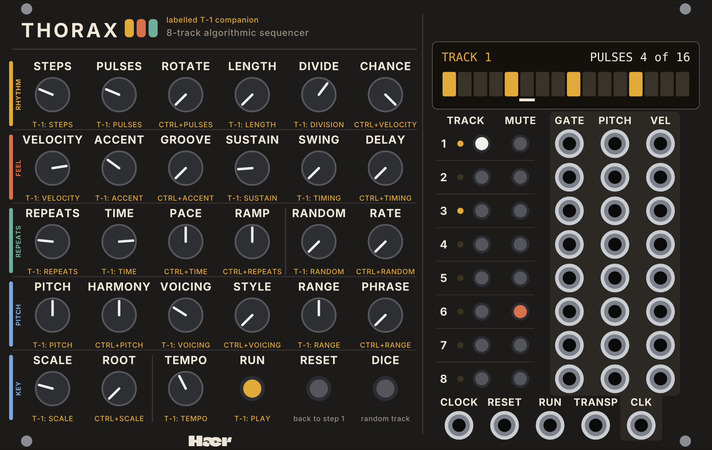

Thorax is an 8-track algorithmic sequencer that works like the Torso T-1, with one difference: every control has its own knob with its name written on it. Under each knob, in amber, is where that control lives on the T-1. So when you learn a move in Thorax, you also know which knob to turn on the hardware (and whether to hold CTRL).

"CTRL + X" means: on the T-1, hold the CTRL pad and turn knob X. Thorax gives those hidden second functions knobs of their own.
| Thorax | On the T-1 | What it does, in plain words |
|---|---|---|
| RHYTHM: which steps play | ||
| STEPS | STEPS | How many steps in one cycle of the pattern (1 to 64). 16 = one bar of sixteenths. |
| PULSES | PULSES | How many hits in the cycle. Thorax spreads them as evenly as it can (a euclidean rhythm): 4 of 16 is four on the floor; 3 of 8 is the tresillo; 5 of 16 and 7 of 16 give classic syncopated grooves. |
| ROTATE | CTRL + PULSES | Slides the hits along the steps so the pattern starts from a different place. Same hits, different feel: 4 of 16 rotated by 2 plays the offbeats. |
| LENGTH | LENGTH | Restarts the pattern after this many steps, even part way through a cycle. Off (the default) means it never restarts. STEPS 7 with LENGTH 16 gives a 7-step pattern that still resets every bar. |
| DIVIDE | DIVISION | How long one step lasts. 1/16 is normal; 1/8 plays the track at half speed, 1/32 at double speed. 1/3, 1/6, 1/12, 1/24 and 1/48 are triplets. |
| CHANCE | CTRL + VELOCITY | The chance that each hit actually plays. 100% plays every hit; 60% drops about four in ten. The T-1 calls this probability. |
| FEEL: how loud, how long, how late | ||
| VELOCITY | VELOCITY | How loud the notes are. Comes out of VEL as 0 to 10 V: patch it to a VCA level or a drum's accent input. |
| ACCENT | ACCENT | How strongly the GROOVE shape is applied. At 0 every note is the same. At 100% the accented notes stay at full VELOCITY and the others drop to a quarter. |
| GROOVE | CTRL + ACCENT | Which notes get the accent: Downbeats (steps 1, 5, 9, 13), First hit of each cycle, Offbeats (steps 3, 7, 11, 15), Every other hit, Rise (quiet to loud across the cycle), Fall, Arch (loudest in the middle) or Random. |
| SUSTAIN | SUSTAIN | How long each gate stays open, in steps. Short for plucks and drums; above 1 for notes that overlap into the next step. |
| SWING | TIMING | Pushes every second step late. 50% is straight, about 58% is a gentle house swing, 66% is a triplet shuffle, 75% is hard. |
| DELAY | CTRL + TIMING | Plays the whole track late by part of a step. A little makes a part sit behind the beat; give two hat tracks slightly different delays for flams. |
| REPEATS: extra notes after each hit | ||
| REPEATS | REPEATS | How many extra notes follow each hit (0 to 16): ratchets, rolls, echoes. A new hit always cuts off repeats that haven't played yet, as on the T-1. |
| TIME | TIME | The gap between repeats, as a note length: 1/32 is a fast roll, 1/8 a slow echo, triplet values give swung rolls. |
| PACE | CTRL + TIME | Turn left and the repeats speed up like a bouncing ball. Turn right and they slow down. In the middle they're evenly spaced. |
| RAMP | CTRL + REPEATS | Turn left and the repeats fade out; turn right and they build up. Makes rolls sound like echoes, or crescendos. |
| RANDOM: controlled wobble | ||
| RANDOM | RANDOM | Adds random variation to pitch (up to a scale octave either way, always in key) and to velocity. A little gives a human, wandering feel. |
| RATE | CTRL + RANDOM | How often the random value changes: every note, or held for 2, 4, 8, 16 or 32 notes. Slow rates make the line shift in phrases rather than jitter. |
| PITCH: notes, chords and melody | ||
| PITCH | PITCH | The track's note, in semitones above ROOT, snapped to the SCALE. 0 is the root at 0 V (C4 with ROOT C); -12 is an octave down. On the T-1 you play notes in on the pads; here it's one knob. |
| HARMONY | CTRL + PITCH | Moves the note up or down the scale rather than by semitones, so a chord changes from minor to major and back as it moves, the way chords do in a key. |
| VOICING | VOICING | How many chord notes (1 to 8), built by stacking every other note of the scale: 3 gives a triad, 4 a seventh chord. 1 means single notes. |
| STYLE | CTRL + VOICING | How the chord plays. Chord: all notes at once. Chord build: the first hit is one note, and each repeat adds a note. Chord climb: each repeat flips the chord into a higher inversion. Arp per hit: one chord note per hit, cycling. Arp up: the hit and its repeats walk up the chord. Arp climb: the walk keeps going up through three octaves. Chord build, Chord climb, Arp up and Arp climb change across the repeats, so they need REPEATS above 0. |
| RANGE | RANGE | How far PHRASE moves the notes, in scale steps. 0 means no phrase. Negative values turn the shape upside down. |
| PHRASE | CTRL + RANGE | The melody shape laid over the track, spread over four cycles of the pattern. Four cadences step the whole track through a chord progression, one chord per cycle (with RANGE at +7 they land exactly: I-IV-V-I, I-vi-IV-V, ii-V-I-I, I-V-vi-IV). Four LFO shapes (Triangle, Saw, Sine, Square) sweep the notes up and back. |
| KEY and CLOCK | ||
| SCALE | SCALE | The scale every note snaps to: chromatic, major, minor, dorian, phrygian, lydian, mixolydian, harmonic minor, major and minor pentatonic. Set per track, like the T-1. |
| ROOT | CTRL + SCALE | The key's home note, C to B. |
| TEMPO | TEMPO | The internal tempo (24 to 280 BPM). Ignored when CLOCK is patched. |
| RUN | PLAY | Start and stop. Starting always begins from step 1. If the RUN jack is patched, a high gate there runs and a low gate stops. |
| RESET | (none) | Sends every track back to step 1. The RESET jack does the same. |
| DICE | (hold RANDOM) | Throws random values at the selected track's pulses, rotation, repeats, pace, accent, groove and phrase. A quick way to find a starting point. The T-1 does something similar when you hold RANDOM and turn knobs. |
| TRACK 1 to 8 | pads 1 to 16 | Choose which track the knobs edit. The small amber light flashes when that track plays. |
| MUTE | MUTE + pad | Silence a track's gate. Its pattern keeps running. |
CLOCK in: sixteenth-note pulses by default (24, 48 or 96 per beat in the right-click menu). RESET in: back to step 1. RUN in: a gate that runs and stops. TRANSP in: V/OCT transposition for all tracks, which stays in each track's scale (patch a chord root from the Hapax or Weighted here). CLK out: sixteenths, whether Thorax is following the internal tempo or an outside clock.
Track 1 kick: 4 of 16. Track 2 clap: 2 of 16, ROTATE 4. Track 3 closed hat: 4 of 16, ROTATE 2 (offbeats), SWING 58%. Track 4 open hat: 7 of 16, CHANCE 70%, ACCENT 60%, GROOVE Offbeats. Track 5 rim: 5 of 16, ROTATE 3, REPEATS 1, TIME 1/32, DELAY 10%.
One track: PULSES 3 of 16, VOICING 4, STYLE Chord, SUSTAIN 0.3, REPEATS 2, TIME 1/8 triplet (1/12), RAMP -60%. Add PHRASE I-vi-IV-V with RANGE +7 so the stabs change chord every bar.
PULSES 2 of 16, VOICING 3, STYLE Arp climb, REPEATS 6, TIME 1/16, PACE -60%. Each hit throws a ball of notes up the chord, speeding up. Turn HARMONY to move the chord through the key.
STEPS 13 against a 16-step kick, PULSES 5, LENGTH 32 so it resets every two bars. PHRASE Sine, RANGE +5, RANDOM 30%, RATE every 8. CHANCE 80%. The line keeps drifting against the bar but never loses the downbeat.
Thorax is a learning companion, not a clone. The T-1 manual describes what each control is for, but not the exact maths behind it, so a few behaviours are Thorax's own reading of it. In particular, the exact spacing of repeats with PACE, the cadence and LFO shapes, the chord styles and the accent shapes may sound a little different from the hardware. The idea each knob controls, and where to find it on the T-1, is the same.